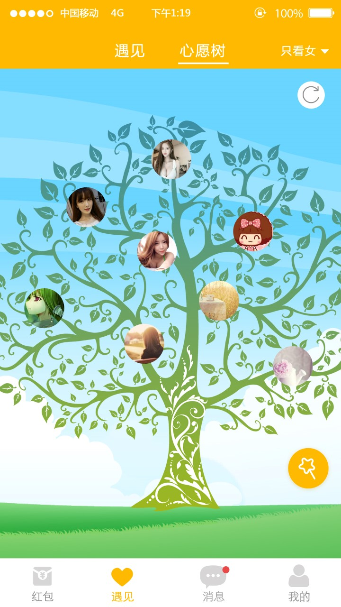
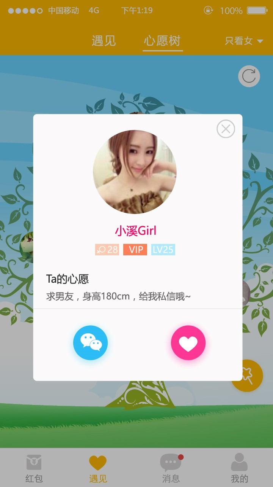
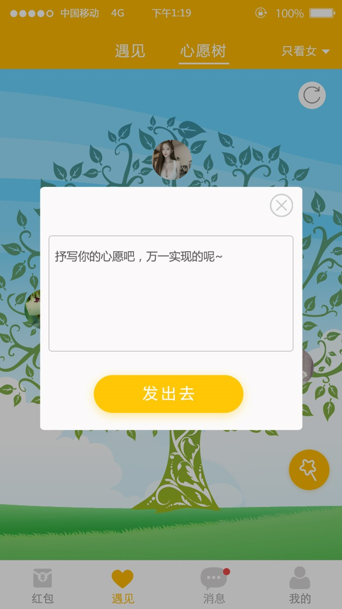

心愿树页面----说明；
交互说明：
1.用户打开其此页面时进行刷新，后台从心愿库中取最近3天内的数据并每次随机10个心愿放在树上；
2.用户可以点击刷新按钮进行刷新数据，每次刷新10个；
3.点击头像打开心愿信息弹窗；
心愿弹窗----说明；
交互说明：
1.点击关闭按钮关闭弹窗；
2.点击头像进入个人主页；
3.点击聊天按钮则进入聊天界面，点击爱心按钮则关注，再次点击爱心还是关注，没有取消关注，如果要取消则进入个人主页进行取消；
写心愿弹窗----说明；
交互说明：
1.点击关闭按钮关闭弹窗；
2.点击头像进入个人主页；
3.点击发出去按钮，判断一下字符数，最少20个字符；
• 如果空，则提示"还没写一个心愿呢~"；
• 如果不足20字符，则提示"不足20字符"；
• 如果包含敏感词汇，则提示"不能够包含铭感词汇"；
4、用户写心愿每天只能够写3个，当天只要写心愿就能够得到奖励；
如果超过3个，则提示“每天最多写3个心愿哦”